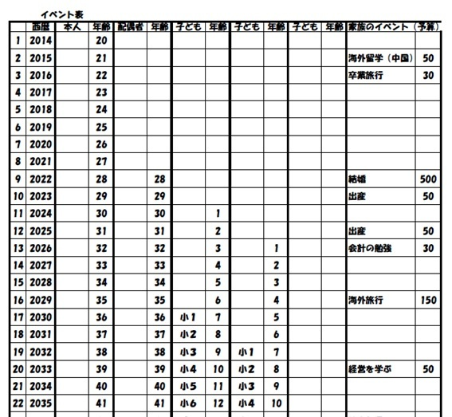
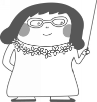
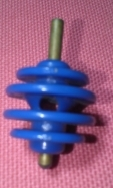

| 20歳（おとめ）のライフプラン: ～ゆるやかに、しなやかに、そしてしたたかに～ | |
| 中島智美 | |
| kakeitoikujinosoudannsitu urara (2014) | |
20歳（おとめ）のライフプラン
～ゆるやかに、しなやかに、そしてしたたかに～
10年ほど前から大学の講義を担当していますが、戦後の成長期やバブル期など、日本の未来が明るく、元気だった頃を知らない今の子どもたちは、将来に希望を持てていないのではいかと思うようになりました。
正社員として就職できない学生も増えてきました。女の子は苦労をして就職しても、結婚、出産、介護などで、仕事を辞めざるを得ない場合が何度もあります。
しかし、それをマイナスだと考えるか、チャンスだと考えるかで人生が大きく変わると思います。
例えば結婚、出産で仕事を辞めて家庭に入った場合、専業主婦という立場になるとそれが向いている人、いない人それぞれです。
私にとって専業主婦の時期は修行のような毎日でした。慣れない子育ても、家事もやってあたりまえ、誰にも褒められず、24時間子育てに時間が優先され、自分の時間など取ることもできません。「神様に試されているのかな？」と思うような日々でした。
それでも子どもたちはとてもかわいく、しばらくは子育てを優先しようと思っていました。
そのような中で偶然FP(ファイナンシャル・プランナー)の資格を知り、久しぶりに勉強をする事で、新しいことを知る喜びに満ちた日々を送ることができました。
専業主婦という立場を経験しなければ、こんなに学ぶことや、働くことが楽しく、やりがいのあることだと気が付かなかったでしょう。
子どもがある程度大きくなり、社会に復帰しようと思ってパートの面接に行くと「旦那さんの許可は取ったのか、子どもの具合が悪い時はどうするのか」と必ず聞かれました。
働くのは私なのに、なぜ私以外の条件でこんなに納得のいかない扱いになるのかと、とても悔しい思いをしたこともありました。
でもそれがきっかけで、自分で独立して仕事をしようと思ったのかもしれません。
起業後、数年がたち仕事の依頼が来はじめた時に感じたのは、「私」に仕事を依頼してくれるということでした。
もう以前のように夫の許可も子どもの病気も聞かれることはなくなりました。
履歴書を提出することもなくなり、代わりに経歴書や実績の提出を求められるようになりました。そこには夫も子どもも、学歴さえ書く欄はありません。まさに私を信じて依頼をいただける喜びをひしひしと感じました。
女性として生まれたからには、女性でよかったと思いたい。
人生は思う様にいかない時にチャンスがきます。違う人生を歩むそのチャンスをぜひ手に入れて、自分らしく、ゆるやかに、しなやかに、したたかに生きてもらいたいと思いこの本を執筆しました。
「うらら」というバラの花があります。バラは春にきれいな花を咲かせます。年に1回の晴れ舞台。ところが、うららは四季咲きなので、冬以外は花を咲かせます。
普通のバラは花を咲かせるときに自分の成長を止めるのですが、うららは成長をしながら花を咲かせるのです。まさに私の目指す姿であり、そんな風にみんなが生きていけたら、どれだけ人生が明るく、華やかになるのかと考えると楽しくなりませんか？
これをお読みいただいたおとめの皆様が、「うらら」のように輝きながら成長し続けることを祈りつつ。
2014年11月吉日
《20時30分》
「あー今日で10代も最後か」
と部屋のなかでネットサーフィンをしながら青葉（あおは）がひとり言をつぶやいていると
「ただいまー」
突然部屋のドアがあき、思わず二度見をしてしまうような来客があらわれた。
「あれ、間違えたかな」
と青葉の部屋を見渡す謎の来客。
身長は100cmぐらい、不二家のペコちゃんに似た顔をして、首には白い花のレイ、大きなスーツケースを持って、頭にはサングラスも。まるで今ハワイから帰ってきたような恰好をしている。
「ウダティーヌ、そこは違うでしょ」
と今度は女性があらわれた。ちょうど母ぐらいの年代の人だろうか。
「ごめんなさいね、私たち方向音痴で、帰る場所を間違えちゃったみたい」
「なんだかつまらなさそうな顔をしているのね、何か心配事でもあるの？」とウダティーヌと呼ばれていた不思議な来客が話しかけてきた。
「明日で20歳になるのだけど、なんだか全然実感もないし、そもそもこの先どんな人生なのか見当もつかない。やりたいことも見つからないし、ましてや夢なんてなんにも思いつかないし」
青葉はなぜか、ぺらぺらと話してしまうことに、自分でも驚いた。
「まぁ 、 それはもったいない！そんなに若くて、これからどんなことにでも挑戦できるじゃない」驚いたように言ったその女性は、さらに話を続けた。
「ごめんなさいね、私は『うらら』といいます。ウダティーヌと一緒にみんなの未来予想図（ライフプラン）を作る仕事をしているの。よかったら相談にのるわよ。」
なんだかそんな歌があったなぁと思いながらも、ついつい話したくなってしまって思わず
「私は青葉（あおは）といいます。よろしくお願いします」と言ってしまった。
「了解、時間はいっぱいあるわ。まずはこれからの人生を一緒に考えてみましょうか」とうららさんとウダティーヌは 、 にこにこしながら目の前に座った。
「じゃあ、まずライフプランを考えてみましょうか」
「ライフプランって何ですか？」
「ライフプランって、『こんな人生をおくりたいなぁ』と思うことをかなえるための未来予想図みたいなものかな」
「思った通りの人生なんておくれるのですか？」
「そうね、『大好きな嵐のメンバーと結婚して幸せになりたい！』というような思ったとおりの人生は難しいかもしれないけど、楽しくて、豊かで、わくわくするような人生をおくりたいと思えば、それはできるわよ」
「ふーん。でもそもそも『将来何になりたい』とか、『どうしたい』とかいうことさえ、まだ全然イメージがわかないのですが、どうしたら将来の夢とか見つけられるのでしょうか」
「本を読んだり、先輩たちの話を聞いたりして、いろんな世界のことを知ってみるといいわ。今から『これだ！』と決める必要はまったくないから、少しでも興味があるものや、やってみたいことにはどんどんチャレンジしてみて。出会った人とのご縁によって人生が変わることもいっぱいあるわよ」
「そうか、確かに今までの自分の人生経験だけで 、 いろいろ考えるのは難しいですね」
「そうそう、これから青葉ちゃんの人生が『ゆるやか』で『しなやか』で、そして『したたか』に生きていくためのヒントを伝えていくから、ぜひ参考にしてね」
「『ゆるやか』と『しなやか』は何となく分かるけど、「『したたかに』ってどうしてですか？」
「それはあとできっとわかるわ。それではこれからの人生について、いろいろお話しましょうね」
「さぁ最初にイベント表を作りましょう」
「イベント表ってなんですか？」
「子どもの頃、夏休みの前に、夏休みの予定表みたいなのを作らなかった？」
「あー、作りました。予定を書きこんで、『夏休み中も規則正しく過ごすように』って言われた記憶があります」
「そうそう、そんな感じで、これからの人生に起きるであろう予定（イベント）を一覧表にして書き出していくの」

「すごい、50年先まで書くんですか？」
「そう、70年分書いてもいいけど。50年分でも70歳ですものね。とりあえず、自分の年齢を入れていって、その時にこんなイベントが起きるというものと、できればその予算も書き込みたいわね」
「イベントってどんなものがありますか？」
「今からだと、就職、結婚、出産、旅行、車や家の購入、それから子どもの結婚や、退職、その他にも何か書きたいことがあれば、どんどん盛り込みましょう」
「なんだか全然イメージがわかないなぁ。どうしよう」
「それじゃあ、これからのことを、一緒に考えていきましょう」

《21時00分》
「そろそろ就活について考える時期なんです。どんな会社がいいと思いますか？」
「女性が一生のあいだに稼げるお金って、いくらぐらいかわかる？」
「うーん、想像もつかないですが、8,000万円ぐらいですか？」
「正社員で働き続ける人（大学を卒業してから60歳の定年まで）で、一生涯の収入は約2～3億円と言われているの」
「そんなに？」
「そう宝くじが当たったような金額よね。でもね、結婚や出産を機に退職して、子育てをしながら夫の扶養の範囲内(約100万円)で60歳までパートで働いた場合は約4,000万円ぐらいになるのよ」
「えっ！その差が1億6千万円にもなるんですか？」
「すごいでしょ。どちらを選ぶ？」
「正社員で働き続けたいです」
「それであれば、就職先に選ぶところはどんなところがいい？」
「あっそうか、働きながら結婚も、出産もしている女性がたくさんいる職場がいいですね」
「先輩たちが両立できる道を開拓してくれているはずなので、そうじゃない職場よりは、きっと勤めやすいわよね」
「なるほど、大きな会社だからいいということではないんですね」
「もちろん、大きな会社は制度も整っていて、お給与もいいし、働きやすい環境は揃いやすいかもしれないわね。だけど大きすぎると今度は転勤の可能性もあるかもしれないしね」
「なるほど、学校に相談をして、仕事と家庭を両立している先輩を紹介してもらうようにします」
「それはいいわね。でもどんなに調べて就職したとしても、夫が転勤なんてことになるかもしれないしね」
「そうか、そうなると思ったとおりにいかないですね」
「まぁ私たちの人生はいろいろあるのが前提なので、それらも考えて、仕事がその後の人生にプラスになるものがいいと思うわ。経験を積んだり、資格が取れたりしたらもっといいわね」
「資格はあったほうがいいですか？」
「あったほうがいいわよ。資格ってあると便利なの。昔の人が『芸は身を助ける』って言っていたけど、私は資格も「芸」の一つだと思っているの。のちの人生で『こんなところで役に立つなんて』と思うことがきっとあるから、若いうちにいろんな資格にチャレンジしてみて」
「はい、仕事に役立って、将来の自分のためにもなるような資格を探してみます」
「合格すると自信にもなるし、一つずつ資格が増えていくと、なんだか自分のレベルが上がっていくような感じもするしね」
「へぇ、働きながら自分のレベルが上がっていくって思うと 、 働くのも楽しくなりそうですね」
「そうそう、会社に入ってすぐにやりたいことや、自分に向いているものが見つかるなんてことは少ないので、とにかく最初はすべてが勉強だし、修行だと思えばけっこう割り切れるわよ」
「青葉、修行僧みたいね」とウダティーヌがニヤッと笑った。
「結婚相手ってどんな人がいいのかなぁ」
「結婚したい？」
「いずれはしたいです。結婚って早い方がいいのかな、それとも若い頃にいっぱい遊んで、30歳ぐらいになってから考えようかな。どちらがいいですか？」
「もし結婚したいのなら、早い方がいいかな。今周りをみて、いいなと思う男の子って彼女がいるんじゃない？」
「いるいる。この人いいなぁと思うと、たいてい彼女がいる」
「そう、結局いいなと思う人はみんなも同じようにいいなと思うので、そんな人から結婚していく可能性が高いの。先延ばしにすればするほど、いい人が少なくなってくると思わない？」
「うわぁ、確かに。そう思うと、急がないといけないですね」
「どんな人が好みかな？ 俺についてこい！ っていうタイプか、今はやりのイクメンで家事や育児を積極的に手伝ってくれる人や、あるいは年下であなたのいうことはなんでも聞いてくれるような弟タイプとか」
「うーん、どれも捨てがたい!でもうちの父親がなんにもしない人で、母がずいぶん苦労していたから、私はイクメンがいいかな」
「青葉、ボーイフレンドはいるの？」ウダティーヌが直球で聞いてきた。
「これから探すのよ」
「それは、自分がどんな人がいいのか絞れないから決まらないのかも。もしかしたらもう出会っているけど気がついていないのかもしれないしね」
「絞ったら見つかりますか？」
「そうね、確約はできないけど、見つかりやすくはなるわね。少なくともイクメンがよければ、子ども好きな人がいいとかね。もちろん、他人の子はあまり好きじゃないけど、自分の子はかわいいという人も中にはいるけど、それを発掘するのは難しいので、とりあえず子ども好きな人を探してみるのはどうかしら」
「子ども好きってどこで見つかります？」
「子どもと接するアルバイトとか、夏休みに子ども向けにイベントをしているようなところでボランティアとして自分も参加してみるとか」
「なるほど。そうか。よし、これからだと冬休みがあるから、いろいろなイベントをチェックしてみます！」
「青葉、婚活のスタートだね」とウダティーヌが笑った。
「結婚相手となると、さらにその先も考えないとね。たとえば結婚したら住みたい場所はある？」
「私は生まれてからずっとここで育っているから友達もたくさんいるし、今の家の近くがいいかな。子どもが生まれても両親が協力してくれそうだし」
「そうなると、もしかしたら地元で相手も探したほうがいいかもしれないわね。たとえば小学校、中学校、高校の同級生や、その友達とかだったら、結婚しても地元に住み続けられる可能性が高くなりそうね」
「そうか、そうなるとまず狙うは同窓会？」
「それはいいわね。きっとみんな集まりたいと思っていても、なかなか幹事がめんどうでしていないのかも。幹事をしたら喜ばれるんじゃないかしら。実は幹事ってもてるのよ。めんどうなことを一生懸命こなしている姿っていいなと思わない？」
「確かに。めんどうな仕事を引き受けて頑張っている姿をみると、あぁいい人だなって思います」
「そうなったらやるしかない！最初のきっかけは同窓会でも、そこで気が合った仲間で、またその友達を誘って飲みに行ったり、遊びに行ったりするのはどう？地元であれば集まるのも簡単だし」
「そうですね、今はたいてい携帯で連絡がとれちゃうから、ちょっと気軽に集まってみるのもいいかも」
「みんなに喜ばれて、自分も得して一石二鳥ね。夏はバーベキュー、冬はスキーとかもいいいわね。飲み会だけより、何か一緒に楽しめるものがあるとぐんと仲良くなれるし、その人の性格（本性？）も分かるわよ」
「うーん、結婚相手を探すにも、いろいろ計画的に動かなくちゃならないんですね。
「ふふ、計画的に動いても運命の人が遠くの人だったなんてこともあるしね。だから人生おもしろいのかもしれないわね」
「チャンスの神様は前髪しかないみたいだから、チャンスが来たら逃がさないようにね！」と突然ウダティーヌが真顔で言った。
「どういう意味？」
「前髪をつかまないと、後ろからはつかめないってこと。つまりチャンスがきたら、早く反応しないと手遅れってことよ！」
「なるほど、瞬発力が必要ってことね。これだと思ったらつかむ訓練をしておかなくっちゃ」
「結婚式ってお金がかかりそうだけど、やらないとダメですか？」
「そうね、結婚式もお金をかけようと思えば、いくらでもかけられちゃうから、ほどほどがいいわね。でもほどほどでもやったほうがいいわ」
「どうしてほどほどでも、やったほうがいいのでしょうか」
「本人たちはお互いの家族に会う機会もあるけど、それ以外の親戚が顔を合わせる機会って結婚式を外すと、あとはお葬式ぐらいになってしまうの」
「えーっ、家族なのに、親戚の最初の顔合わせがお葬式かぁ。結婚式って親族の顔合わせもかねているんですね」
「そうそう、ちゃんと意味があるのよ。たとえば結婚式を家族や親族だけにして、そのあとのパーティーは会費制で友達を招くのがいいかも。女性は結婚式に出るとなると、お祝いだけでなく、美容室に行ったり、洋服を買ったり、同じ時期に友達の結婚式が重なると出費もつらいでしょうしね」
「そういうの、寿貧乏（ことぶきびんぼう）って言うのよ」ウダティーヌが教えてくれた。
「例えば結婚式場で、50名様100万円なんていうプランがあったとするわよね。100万円には、ドレスや、お料理や、結婚式にかかる費用全部が含まれているの。友達まで招待しようと思うと50人では足りないかもしれないけど、親戚や会社の上司だったらこれぐらいの人数で充分だと思わない？」
「そうですね、親戚だけでも10人以上いるし、50人を2人で分けると25人。それぐらいになりますね」
「結婚式のコストとしてみれば、一人2万円でしょ。親戚や上司の人のお祝いはおそらく3万円～5万円ぐらいが相場だと思うから、結婚式を挙げても儲かるかもしれないわよ」
「うわ、本当だ。結婚式ってお金がかかるからやらなくてもいいと思っていたのに、儲かるかもしれないなんて気がつかなかった」
「ね、親戚にもお互いを紹介できて、上司の顔も立てられて、いいこと尽くしでしょ。青葉ちゃんもウエディングドレスを着た写真も撮ることができるし、年賀状にも使えるわよ」
「こういうの『したたか』っていうの？」
「『賢い』っていうのよ」とウダティーヌが笑った。
「友達は会費制にすれば、呼ばれたほうも気楽に参加できるから、たくさんお友達を呼べるわよ」
「なるほど。結婚するときには、ちゃんと式をあげようと思います」
《21時30分》
「結婚して子どもができたら、みんな最初はどうするの？」
「まずは産婦人科に行くのよ。そうするとエコーで赤ちゃんの様子が見えたり、出産予定日がわかったりするからとにかく早めに一度行ってみるといいわよ」
「産婦人科なんて行ったことがないから敷居が高いなぁ」
「もちろん今すぐではないから、その頃にはお友達にも出産した人や、先輩でママになりたての人がいたら、病院を紹介してもらえばいいわよ。それからね、すぐに病院に行くということには他にも理由があるの」
「他の理由？」
「青葉ちゃんが、今けがをしたり病気になったりすると、健康保険証を持って病院に行くでしょ。窓口で払うお金は健康保険証を使うと、実際の医療費の3割が自己負担なの。たとえば窓口で3千円と言われたら、実際の医療費は1万円ということ。いわゆる保険がきいて3割の3千円なの」
「へぇ、そんな仕組みなんですか。でも、それとすぐに病院に行くのとどんな関係があるんですか？」
「実は妊娠、出産は病気じゃないから、健康保険が使えないの。病院にかかるお金はすべて自己負担なので、1万円だとすると1万円になっちゃうの」
「えー、そんなぁ。お金がなかったら赤ちゃんも産めないってことですか？」
「そうなっちゃいますよね。でもそうなるとお金がないと赤ちゃんを産む人が少なくなっちゃうので、そうならないために使える制度がいろいろあるのよ」
「あーびっくりした。赤ちゃんができたらどれだけお金がかかるのか心配になっちゃいました」
「そうよね、心配させてごめんなさいね。まず病院に行って妊娠がわかったら、市役所で『母子手帳』を発行してもらえるの」
「母子手帳、見たことあります。小学校の時に授業で母子手帳を学校に持って行って、自分の小さい頃のことを調べたことがありました」
「そうそう、母子手帳って、とっても大切なもので、赤ちゃんが産まれた時の体重や身長、予防注射の記録やお母さんの妊娠中の健康状態などを記録していくの。妊娠中の検診の無料券やその他使える制度がたくさん書いてあるのでそれを早めにもらって使ったほうがお得でしょ」
「そうですね、知らずに何回も病院に通っていたら、それだけで数万円かかっちゃうかもしれないってことですよね」
「だいたい妊娠がわかるのが2～3か月目ってところなので、そこから10か月目まで、半年以上の妊婦生活がはじまるの。人によってつわりのひどい人もいるし、ぜんぜんつわりのない人もいるし、様々。実は妊婦生活でこの時期が一番大切で、大変な時期かもしれないわね」
「きつそうですね」
「働いていれば通勤電車に乗らなければならないけれど、お腹がまだ目立たないので、周りに気づいてもらえず、席も譲ってもらえないこともあるかも。初めての妊婦生活だし、不安もいっぱいですものね」
「うわ、なんだか心配になってきた」
「ごめんなさいね、別に脅しているわけではないの。でもこの時期がとても大切だってわかれば対処法も分かるしね。まずは無理をせず、許されれば時差通勤という方法が取れるといいわね。4か月から5か月になると安定期に入って、ずいぶん楽になるの。妊婦生活にも慣れてくるし、お腹も目立ってくると、電車で席を譲ってもらえたりするの。世の中捨てたものじゃないないなって思ったりするはずよ」
「そうか、今度電車で妊婦さんを見かけたら席を譲ろうっと」
「そうね、そうやって人を思いやる気持ちが、自分の時にきっと巡り巡って返ってくるわよ」
「産婦人科ってどこも同じようなものですか？」
「最近はいろいろな産婦人科があってなかなか面白いの。食事が豪華な病院とか、入院中にエステのサービスがあるとかね。もちろんサービスが手厚ければそのぶん料金も高くなるからほどほどにね」
「なんだか病院の食事っておいしくないイメージだったけど、そんなに豪華な食事も出るんだ」
「妊婦さんは病人じゃないから、普通の病院の食事のようにいろいろな制限があるわけではないの。基本的に食べ過ぎなければ普通の生活と同じで構わないものね」
「そうなんだ、どうせ入院するなら食事がおいしいところがいいなぁ」
「じゃあ、お友達が赤ちゃんを産んだらお祝いがてらいろいろな病院を見て、友達にも話を聞いてみるといいでわね」
「食事の時をねらって、お祝いに行ったらいいんじゃない」とウダティーヌが笑った。
《22時00分》
「結婚しても、今の住んでいる地域に住みたいのよね」
「もう小さい頃からここしか住んだことがないの。それにここだったら子育ての協力者もたくさんいそうだし」
「住む場所によって子育ての支援が違うって知ってる？」
「子育ての支援？」
「そう、例えば子どもの医療費。子どもってすぐに熱を出したり、けがをしたりするのだけど、住んでいる自治体によって、子どもが小学校に入るまでとか、中学3年生まで、医療費を無料にしているところも東京23区をはじめたくさんあるのよ」
「えっ、病院に行ってもお金がかからないの？」
「そう、薬も無料よ」
「私が住んでいるところはどうなっているんだろう。ちょっと調べてみます。もしかしたら、隣の市は中学3年生まで無料だったら、そっちに住んだ方がいいってことですか？」
「病院によく通う子どもだったら、15年間無料だと相当違いが出るわね」
「そんな制度があるなんて全く知りませんでした。私は子どものころからあまり風邪もひかないし、病院にも行かなかったから考えたこともなかったです」
「他にも市区町村ごとにいろいろな子育て支援があって、例えば東京都杉並区は赤ちゃんが生まれると子育て応援券というのが4万円分もらえて、いろいろなサービスと交換できたりするのよ」
「へー、いいなぁ、そんなこともしているんだ。住むところでサービスに差が出るんですね。知らないと損をすることばかりだなぁ」
「これからは知っている人と知らない人で大きく差が出てくるわよ」ウダティーヌが笑いながら言った。
「子どもが生まれたら働いている間は子どもを預けますよね。幼稚園と保育園ってどこが違うのですか？」
「どちらも同じような感じよね。でも幼稚園は文部科学省が管轄する学校で、保育園は厚生労働省が管轄する福祉施設なの。保育園は保護者が昼間働いていたり、家族の介護をしていたりして、子どもの世話ができない人のために保育をしてくれる施設。幼稚園は保護者が働いていなくても学校だから自由に入れるの。最近は両方を兼ねた『認定こども園』というのもできているのよ」
「幼稚園も保育園も同じようなものだと思っていたのに、違うのですね。仕事は続けたいから、私の子どもは保育園に行くことになるのでしょうか」
「そうですね、おじいちゃん、おばあちゃんが見ていてくれるということでなければ、保育園に預けることになるわね」
「保育園ってたくさんあるけど、どうやって選んだらよいのでしょうか」
「保育園って、認可保育園、認証保育園、無認可保育園などといって、いくつかの種類に分かれます。中学や高校のように、私立・公立という分け方ではないの」
「どれを選んだらいいのでしょうか」
「まずは認可保育園から探してみて。保育園にはいろいろな基準があって、例えば0歳だったら、子ども三人につき、保育士が一人いなければいけないとかね」
「えっ、子ども三人に一人も保育士さんがいるんですか？」
「そう、他にもいろいろ厳しい（子どもにとっては安全な）基準があって、それをクリアして認可保育園になるの。だからここが一番預けるには安心かな」
「そんな基準があるんですね」
「認可保育園には、公立と私立があるのだけど、どちらも保育料は保護者の前年の所得で決まるの。中学校や高校みたいに、私立だから高いということではないのよ。面白いでしょ」
「えー、私立も公立も一緒なんですか？なんだか不思議。だったら私立の方がいいのでしょうか」
「保育園って、子どもにとって家で過ごす時間と同じぐらい、あるいはそれ以上の時間を過ごすところなの。だから選ぶのは慎重にね。先生たちの子どもへの接し方、掃除が行き届いているか、給食はおいしいか、先生同士も仲が良いかとか、いろいろなところを見て決めるといいわよ」
「情報を集めるって大切なんですね、その時がきたらしっかり調べてみようと思います」
「基本的にどこの保育園も見学は大歓迎なので、気になるところには電話をして行ってみてね」
「青葉、給食の試食ができるところがいいわね」とウダティーヌが笑った。
「さっきから私が食べることばかり気にしているみたいに言わないでよ！」
《22時30分》
「子育てってどれくらいお金がかかるんですか？」
「びっくりするほどかかるわよ」
「えっ、そうなんですか？」
「子どもにかけるお金はきりがないので、一般的な話をするわね。教育費だけで見ると
『幼稚園（公立）・小学校（公立）・中学校（公立）・高校（公立）、大学（私立）→1,000万円』
これが基本形ね。もし私立の中学、高校に進学すると、年間100万円をプラスします。
例えば私立高校に通ったら、1,000万円+300万円＝1,300万円という感じなの」
「基本で1,000万円・・・」
「そう、これは教育費だけ（塾や習い事を含む）の金額で、生活費は別。なので、子ども一人を育てるのに3,000万円ぐらいかかると言われているのよ。」
「私は高校から私立に通わせてもらっていたので、トータルして1,300万円ぐらい教育費だけでかかっているってこと？それに一人育てるのに3,000万円なんてそんなにかけてもらっていたんですね。なんだか親に感謝しないといけないですね」
「そうね、子どもは当たり前みたいに思うけれど、親になるとその大変さが分かると思うわ。青葉ちゃんは高校から私立って言っていたけど、中学校から私立に行っていた友達もいない？」
「います、クラスで何人かだけど、小学校の時に受験して、私立の中学校に行っていた子がいました」
「住む場所によって教育費も大きく変わってくるかもしれないのよ。例えば小学校が駅から近いところにあると、電車に乗って学校に通うのにも便利なので、私立の中学校に行く確率も高くなるわ。中学校から私立だと1,000万円の学費が1,600万円以上になるでしょうね」
「うちの子は私立には入れません！」
「そう思っていても、例えば都心ではクラスの半分以上が私立の中学に通うっていう小学校もあるそうよ。もし通っている小学校がそんな状況であれば、子どもが私立の中学に行きたがるかもしれないし、兄弟がいれば、同じ道を進みたがるかもしれないしね。子ども二人とも私立の中学校に通うなんてことになるといったいどれだけ教育費がかかるのか考えただけでも怖いわね」
「子育てする場所や環境によっても、それだけ教育費に差が出ると大きいですよね。親の収入ってどこもそんなに変わらないのに......」
「私立の学校に行った場合の学費の話をしたけれど、受験前になると塾の費用も高いと年間100万円を超えるわよ」
「私、中学生のころ塾に通っていました。夏休みなんか、合宿もあってなんだか楽しかったなぁ」
「その合宿に行くのに15万円とか、それとは別に夏期講習が10万円とか。お正月も休まずに塾に行っていたんじゃない？」
「行きました。みんなで『はちまき』もしましたよ。懐かしいなぁ」
「毎月の塾の費用も受験が近づくとコースごとに料金が追加され、毎月受ける模擬試験だって、1回5,000円ぐらいするのよ。そんな金額をトータルすると1年間で100万円近くはかかるわ」
「私立の学校に行くのと同じぐらいお金がかかるんですね。うーん、もしかして学費ってさっきの1,000万円という金額より、もっと多くなるのでしょうか」
「そうね、親としてはこれだけのお金を出しているのだから、一生懸命勉強してもらいたいと思うわよね」
「うーん、そんなこと、あのころ考えなかったからなぁ、友達も行っているからという理由で塾に行っていた気がする。なんだか申し訳ないなぁ」
「いま気がついてよかった。まだあと2年大学に通うでしょ。しっかり勉強して学費の元をとらないとね」
「青葉ちゃんは大学で奨学金を利用している？」
「私は使っていません。でも友達はけっこう使っています。学費は親が出してくれるから、奨学金は一人暮らしの生活費にしている子もいます」
「いま大学生でも、5割近くの人が奨学金を使っているのよ。私立の大学に通っていて、1年間の授業料約100万円を奨学金で払おうと思うと、毎月10万円の奨学金のコースがあって、これを使って学費を準備している子も多いと思うわ」
「毎月10万円ずつもらえるんですか？」
「もらえるというとちょっと違うかな。奨学金はあくまでお金を借りるものなので、卒業してからそのお金を返済していくの」
「月に10万円ずつだとしたら、4年間で・・・480万円？」
「そう、大学生なのに、卒業する前に500万円近い借金を背負っていることになるのよ」
「みんな分かっているのかな」
「最初に説明があるから、おそらくわかっていると思うけど、実感はないでしょうね。奨学金には1種と2種があって、2種は利息をつけて返済をするんだけど、金利の上限が3％。もし480万円を金利3％で返すとなると、毎月の返済額は26,914円これを20年間毎月返し続けていくの。総額は6,459,510円」
「それ、自分で返していくんですよね」
「そう、奨学金のは借りた本人がちゃんと返すことが原則なの。その返したお金が次の奨学金を使う人に回るので、奨学金を返す口座を『リレー口座』というのよ」
「20年間もずっと返し続けないといけないんですよね」
「もちろん、お金を貯めて早めに返してしまうこともできるわよ。そうすると支払う利息も少し減ります。22歳から返し始めたら42歳よ。その頃には自分の子どもの教育費のお金がかかったり、住宅ローンがあったりするから、27,000円近いお金を払うのは大変よね」
「ますますみんな分かって借りているのか心配になってきた」
「例えば、奨学金は男の子も、女の子も使っていると思うんだけど、結婚して二人ともが奨学金を借りていたとしたらどうなると思う？」
「二人で54,000円？」
「そう、もし二人とも正社員で働いていたらまだいいけど、子育て中で専業主婦だったら、一人の収入で奨学金と、住宅ローンと、子どもの学費と、もちろん毎月の生活費も払わないといけないわね」
「それ、無理ではないですか？」
「厳しいでしょうね。もし奨学金の返済ができなくて、3か月ほど滞納した場合、個人信用情報機関に『この人は奨学金の返済を延滞しています』と登録されてしまうの。そうなったら『この人は経済的信用が低いです』と判断されて、クレジットカードは作れないし、もちろん借金もできないの。借金って住宅ローンや、車を買う時のローンもよ」
「えっ奨学金が返せなかったら家も買えなくなるってこと？」
「そう、怖いでしょ。それが借金なの。奨学金は学費なのである程度は仕方ないし、奨学金のおかげで大学で勉強ができるという人もたくさんいるので、きちんと返済をしていけば怖いことはないの。でもそれ以外の借金はよほどのことが無かったらしてはだめよ。もちろん一生ローンが組めないわけではなくて、完済したあと5年たてば、通常はもとどおりクレジットカードを作ったり、ローンを組んだりすることも可能になるんだけどね」
「明日学校で友達と話してみます。知らないって怖いことがたくさんあるんですね」
「そうなの。みんなはまだまだいろんな経験が少ないので、先を見渡すことが難しいと思うけど、知らないことはとっても怖いこと。もっと自分の事や、将来どうなっていくか、分からないなりにでも考えていかないとね。あとになって『こんなはずじゃなかった』となってしまうのは本当に私達もつらいわ」とうららさんは悲しそうな顔をした。
《23時00分》
「結婚したら家を買ったほうが得なの？借りているほうが得なの？」
「一生涯で家にかかるお金を計算すると、両方たいした差はないの。だからどっちでもいいと思うわ。家が欲しければ買ってもいいし、自由に引っ越しを楽しみたければ賃貸でもいいし。青葉ちゃんは家に対してどんなイメージがあるの？」
「やっぱりお庭があって、犬がいて、子どもたちが遊んでいたり、みんなでバーベキューをしたりする感じかなぁ」
「ドラマに出てきそうな家ね。それじゃあ、家を買う時に気をつけたいことを教えましょうか。まずは家を選ぶところから。さっきの話だと、バーベキューのできるお庭のある一戸建てかしらね」
「そうですね、芝生を植えたり、ガーデニングとかもやってみたいなぁ」
「家を売っているチラシを見たことある？」
「あります、よく土日に入ってくるやつでしょ」
「そこに家の値段が書いてあるでしょ、例えば3,500万円とか」
「書いてありますね、高いですよね」
「そうね、高いわよね。でも実際にはその金額では買えないのよ」
「えっ、他に何がかかるんですか？」
「家を買う時には、まず税金がかかるの。消費税だけではなくて、普段めったに聞くことがない登録免許税とか不動産取得税とかね。それからお金を借りる銀行や、不動産屋さんに払う手数料、家を買えば火災保険という保険にも入るし、そして、引っ越しの費用とか、新しい家具を買うための費用とか、そんな「諸経費」って合計すると、なんと家の値段の2割ぐらいかかるのよ」
「えっ、3,500万円の2割って、もしかして700万円？それって足し算したら4,200万円になるってこと？」
「そう、すごいでしょ。金額が大きすぎて感覚が麻痺してくるでしょ」
「はい、そもそも3,500万円というお金のイメージも沸かないです。みんなそんなにお金を払って家に住んでいるってことですか？」
「そう、家を買ったら、さらに毎年固定資産税という税金もかかってくるしね。なかなか大変なのよ」
「だから夢のマイホームっていうでしょ」とウダティーヌがニヤッと笑った。
「買うのは簡単。銀行でお金を借りて、毎月返していけばいいの。その金額は賃貸に住んで家賃を払うのとたいして差がないしね。ただ、銀行にお金を返していく期間はどれぐらいだと思う？」
「うーん、3,500万円でしょ、20年ぐらいかかるのかな」
「おそらく35年よ。」
「35年？？？30歳で買ったら65歳まで払うんですか？」
「そう、30歳だったらまだいいけど、35歳とか40歳だったら70歳とか75歳まで払うことになるのよ。ちなみにそんな人はたくさんいるのよ」
「75歳・・・。うちのおじいちゃんの年ぐらいだ。あれ、おじいちゃん働いていないけどみんなそれでもお金を返しているの？」
「さすがに年金からお金を返すのは大変なので、だいたい退職金をもらったら残りのローンを返してしまうの。お金があれば早めに返してしまっていいのよ。でもね、もし賃貸だとしたら、ずっと家賃を払っていかなきゃいけないから、けっきょく住むところにかかるお金って大変なのよね」
「だから買っても借りても同じぐらいになるんですね。同じだったら買ったほうがいいのかな」
「どちらにもメリット、デメリットがあるから、家を買うことが現実になってきたときにはいろいろ考えてみてね。もしかしたらどちらかの実家を二世帯にして住むことになるかもしれないしね」
「買わない場合のメリットとデメリットって何ですか？」
「メリットは、賃貸だったら、急に収入が減るようなことがあっても、それに合わせて安いところに住み替えることが簡単にできるわよね。デメリットは、住宅ローンのように終わりがないので、年を取って年金暮らしになっても家賃を払い続けなければいけないことかな」
「どっちを選んだらいいのか難しいですね。その時がきたら判断できるのかな」
「買うことを選んだときに大切なのは『返せるお金を考えてお金を借りる』こと。難しいのだけど、借りられるお金と返せるお金は意味がぜんぜん違うのよ」
「えっ、同じじゃないの？」
「たとえば収入から計算して4,000万円というお金がとするわね。これはお給料が同じ人だったらほぼ同じ金額になるの（家族の人数によって多少変動）。一人は独身、一人は。家族がいて、実家の両親に仕送りもしている。こうなると、返せるお金は違うでしょ。
家族ごとに支出の額が違うのに、借りられるお金は収入で計算してしまうから、現実とずれが出ちゃうのよね」
「家族が多い人が同じだけ借りちゃったら返すのが大変ってことですね。借りられるお金でなくて、返せるお金かぁ。ちゃんと覚えておきます」
「そろそろ車の免許もとりたいんだけど、免許を取りに行くのに30万円近くかかるんです。調べてみたら教習所でローンを扱っていて、毎月1万円ぐらいずつ返していけばいいみたいなんですが、これだったら親にも迷惑をかけずに車の免許がとれるかなと思って」
「社会人になる前に免許がとりたいのね。確かに免許があれば仕事の幅も広がるし、社会人になるとなかなか時間がとれないから、学生のうちにとりに行くのはいいかもしれないわね。ただ、ちょっと気をつけて。教習所で講習代をローンにした場合、実際に借りたお金に利息がかかることになるの。おそらく金利○％と書いてあるはずなのでよく見て。
たとえば金利が13％と書いてあって毎月1万円ずつ返済していくとなると、何回で返せば良いと思う？」
「30万円だから30回ではないの？」
「ぶっぶー」とウダティーヌがニヤッと笑った。
「それではお金を貸した人の儲けがないわね。お金を借りるという事は相手に手数料を支払うの。たとえばローンが30万円、金利が13％、毎月の返済額を1万円にした場合、全部で支払いは36回。返済の総額は364,770円です。つまり64,770円も利息を支払う事になるのよ」
「えっ、30万円を借りて65,000円も利息を払うってすごい金額・・・。びっくりしちゃう」
「そう、お金を借りるってそういうことなの。よくリボ払いって聞くでしょ。さっきの計算は金利が13％としての計算だったんだけど、リボ払いの金利は一般的には15％程度なの。もっと高い18％というのもあるわ。だからさっきの支払いよりも、利息が増えることになるの。
「想像できないけど、きっとたくさん利息を払うことになるんですよね」
「そう、だから安易にローンを組んだり、リボ払いにするのは賢くないわね。だって貯めてから買えば、利息は0だもの。30万円を貯めておけば65,000円は他の買い物ができるってことでしょ」
「65,000円あったら欲しいものがいっぱい買えるわ」
「家を買う時にも言ったけど、借りられるお金と返せるお金は違うの。必ず返せるお金を意識しましょう。いったい総額でどれぐらい支払うのかを先に調べておけば、それだけの価値があるものなのかどうかも判断できるしね。」
「お金は借りないにこしたことはない」ウダティーヌが大きくうなずいた。
《23時30分》
「青葉ちゃんは得意なものはある？」
「得意というか、妹や弟がいるから、けっこう小さい子どもの相手をするのが得意かも」
「結婚や出産を機に仕事を辞めても、ある程度子どもが大きくなって働こうと思った時に、パートに出たりするのもいいんだけど、公文や学研、ECCの先生といった自宅でできる仕事もあるのよ。子どもが好きならお勧めよ」
「そうか、働くために通勤しなくていいんだ。」
「そう、実は子育てと仕事を両立するときに起業するのは、いろいろメリットがあるのよ」
「起業なんて考えたこともなかったけど、確かに家で仕事ができれば、子どもが帰ってきたときに家にいられるし、雨が降ったら洗濯物も入れられるわ」
「青葉って若いのに所帯じみてない？」とウダティーヌがニヤッと笑った。
「しっかりしてるって言ってよ」
「ごめん、ごめん。」
「起業っていうとなんかすごいことのような気がするけど、大きな会社をつくるのも起業だし、小さなお店を開くのも起業。思っているより簡単よ」
「へー、簡単なんだ。私雑貨が好きだから雑貨屋さんとかもいいなぁ」
「素敵ね。もし将来、雑貨屋さんや、子どもを集めた教室をやりたいなと思っていたら、家を建てる時に一部屋、外から出入りできる部屋を作ることもできるのよ。そうしたら、その部屋をお店や教室にできるから、家賃はいらないし、そこで収入があればお得だと思わない？」
「思う！そうか、わざわざお店を借りなくてもいいんだ」
「でもその代わり場所は考えないとね。近くに住宅街やマンションがあれば、生徒さんやお客様は集まりやすいかもしれないけど、ちょっと不便だと集客も大変だしね」
「なるほど。いろいろ人生ってつながっているんですね」
「そう、だから未来予想図（ライフプラン）を作ると、その人生がつながっているのが見えてくるでしょ。無駄もなくなり、自分の夢をかなえるために準備もできるのよ」
「正社員としてバリバリ働くもよし、起業して自分のペースで仕事をするもよし。女性は結婚や介護を理由に仕事を辞めなければいけないことがあるけれど、でもそれは新しい人生をスタートさせるチャンスでもあるの」
「そうか、人生って一つじゃないってことですね」
「そう、青葉ちゃんはこれからたくさんのチャンスに出会うはず。どんなチャンスかわからないけど、青葉ちゃんらしい未来予想図を何度でも修正しながら書いていってね」
「はい。何度でも書き直せるって、すごく楽になります。正解もたくさんあるってことですよね」
「そう、自分が正解だと思えば、どんな結果でも正解。数字や計算では導き出せないものが、私達の人生にはたくさんあるの。これからは自分で決めて、自分で行動できる人になってね。もうすぐ20歳だもの」
「そっか、もう20歳だ！」
「青葉、これあげる」とウダティーヌがキーホルダーのようなものを出して見せた。
「なにこれ？」
「幸せくるくる」
「幸せくるくる？なにそれ」
「このキーホルダー、横から見ると『幸』っていう漢字になっているの。見える？」
「あっ、ほんとだ『幸』になってる。おもしろい」
「ふふ、これね、コマになっていて、廻るのよ」と言って、ウダティーヌが手でひねって廻しはじめた。
「わ―廻った！すごい」
「『幸せくるくる』っていうの。青葉がつらい時にはこれをくるくる廻してね。幸せがやってくるから」
「ありがとう。大切にするね」
うららさんとウダティーヌは二人で顔を見合わせて、そしてこちらを見てにっこり笑った。
「それじゃあ、私たちはそろそろ帰るわね。青葉ちゃん、元気でね」と言うと、部屋のドアから出て行ってしまった。
「ピピピピピ・・・」
と突然携帯が鳴った。みると親友のはるかだった。
「もしもし？」
「青葉、20歳のお誕生日おめでとう！」時計を見ると0時ちょうど。20歳になった。
夢だったのかな。ひとりごとを言ってみた。
目の前の『幸せくるくる』を眺めながら。
おわり
どんな時代でも、若い人には明るい未来を夢見てもらいたいと思いますし、明るい将来を思い描き、これから先を見通す力がつけば、この閉塞感が漂う今の日本に希望の光がさすのではないかと思っています。
私は結婚とともに公務員を辞め、専業主婦になりました。子育てをしながらFP(ファイナンシャル・プランナー)の資格を取り、それがきっかけで独立をして仕事をすることになりました。
仕事をしていくうちに、再び大学で専門的な勉強をしたくなり、子育てと仕事をしながら夜間大学に通いました。4年で卒業するのは大変でしたが、それをやり遂げたことで自信もつきました。
その後 、 調理師学校の夜学にも通い、調理師や食育インストラクターの資格も取得しました。
「やりたい」と思ったことは「やれない理由」を探すのではなく、「どうしたらやれるか」を考えました。家族を説得し、学費の準備、仕事や子育てとの両立。小学校の役員も引き受け、ボランティア活動もしました。
周りから見たら、「忙しいのになぜそんなことまで」と思われていたかもしれませんが、どれも新しい発見や、人生に積み重なっていく経験が楽しくもあり、自信にもつながりました。
今回も初めて電子書籍の出版となり、ここまで導いてくださった晴山陽一先生、プロデューサーの小見勝利さん、高橋尚海さん、そして苦労をともにした仲間のみなさま。この出会いがまた大きな一歩となりました。ありがとうございました。
そして忙しい中、原稿のチェックや、アドバイスをいただいた宇都宮みどりさん、大谷更生さん、久谷理紗さん、中村一紀さん、原浩也さん、まつもとまゆさん、四ッ柳茂樹さんありがとうございました。皆様のおかげでこうして無事に出版することができました。すべての人に感謝をこめて。
2014年11月吉日 中島 智美
装丁イラスト、デザイン ： micchie
H P ： http://niwakarain.petit.cc/
＊＊＊＊＊＊＊＊＊＊＊＊＊＊＊＊＊＊＊＊＊＊
この度は「20歳（おとめ）のライフプラン」をご購入いただき、ありがとうございました。この本を購入いただいた方へ以下のプレゼントをご用意いたしました。ぜひご活用ください。
【その１】この原稿のPDFファイルをお送りします。
請求先 info@1fp-nakajima.com 件名に「PDFファイル希望」とご記入の上、メールをお送りください。
電子書籍は読みにくいと思っていらっしゃる方は、印刷してお読みいただければ幸いです。
御請求いただいた方には、本文中の修正事項など、その都度お知らせいたします。
（2日たっても返信が無い場合はメールが届いていない可能性もありますので、その時にはお手数ですが、下記「かふぇうらら」までご連絡ください。
【その２】この本を購入され「かふぇうらら」にご来店いただいた方には「幸せくるくる」(定価380円)をプレゼントいたします！(先着100名様)
本文の中にも出てきた「幸せくるくる」をプレゼントさせていただきます。営業時間をご確認の上、ぜひお店にもいらしてください。お待ちしております！

かふぇうらら
〒359-0044
所沢市松葉町20-1
TEL 04-2998-1213
営業時間 平日10時～17時まで(不定期で土曜日も営業中)
HP
http://www.cafe-urara.com/
blog
http://cafeurara.wordpress.com/